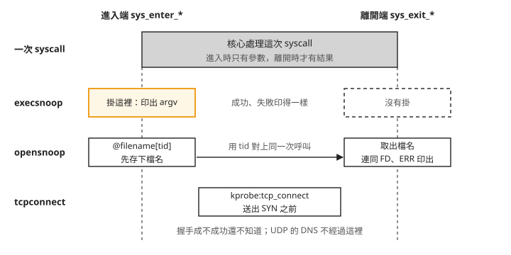
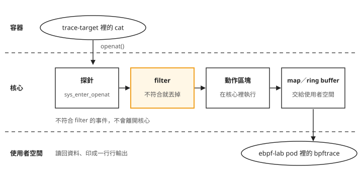
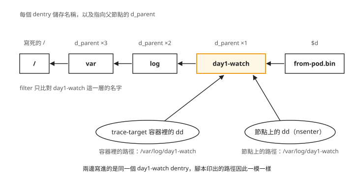

Day 1: bpftrace——現成工具漏掉什麼、.bt 腳本怎麼讀、自己寫一支追蹤腳本¶


假設節點上某個目錄一直被寫進來路不明的檔案，或者你懷疑某個容器在做奇怪的事。你想問三個問題：這台機器剛剛執行了什麼、誰開了哪些檔案、這個容器連去哪裡。Day 0 用一行 bpftrace 在一顆 pod 裡追到另一顆 pod 的 execve，但那一行只回答得了第一個問題的一部分。
Ubuntu 的 bpftrace 套件附了一批現成的追蹤工具，三個問題各有一支對應的工具。這一章先把三支都跑一次，看它們的輸出各漏掉了什麼；再拆開其中一支的原始碼，學會讀 .bt 腳本；最後自己寫一支「誰在寫這個目錄」，並且把它和 bcc（BPF Compiler Collection）比較。bcc 是另一套 eBPF 工具集，也提供追蹤行程執行、開檔與連線的工具。讀完這一章，看到一份追蹤輸出時，你能從工具掛在哪個探針判斷它漏掉哪些事件，並在現成工具不夠時自己寫一支腳本補上。
步驟 1:把實驗環境接回來，確認用的是哪一支 bpftrace¶
Day 0 收尾時把 ebpf 節點池縮到 0，先拉回 2 台：
az aks nodepool scale -g <resource-group> --cluster-name <cluster> -n ebpf \
--subscription <subscription-id> --node-count 2
如果你在兩次練習之間用 az aks stop 停過整座叢集，重新啟動後 kubectl 可能連不上，錯誤訊息還會把你帶往錯的方向，見疑難排解：kubectl 回 no such host。
用完整欄位路徑列出節點名稱、kernel 與 AKS node image 版本（依官方文件補上，本課沒有實跑）：
kubectl get nodes -o custom-columns='NODE:.metadata.name,KERNEL:.status.nodeInfo.kernelVersion,IMAGE:.metadata.labels.kubernetes\.azure\.com/node-image-version'
語法與欄位依據 Kubernetes 1.35 kubectl get 文件、1.35.6 的 Node 欄位定義與 AKS node image 查詢說明；IMAGE 取自 kubernetes.azure.com/node-image-version label。
節點就緒後，連同 system pool 一起列出三台節點的 kernel：
$ kubectl get nodes -o custom-columns='NODE:…,KERNEL:…,IMAGE:…'
NODE KERNEL IMAGE
aks-ebpf-80832270-vmss000002 6.8.0-1062-azure AKSUbuntu-2404gen2containerd-202607.20.0
aks-ebpf-80832270-vmss000003 6.8.0-1062-azure AKSUbuntu-2404gen2containerd-202607.20.0
aks-system-35459509-vmss000002 6.8.0-1059-azure AKSUbuntu-2404gen2containerd-202607.09.0
節點名稱最後的 vmss000002 這類編號是 VMSS 實例編號。az aks stop／start 或把節點池縮到 0 再拉回來之後，編號會換掉，所以節點名稱不能當成穩定的識別，每次都重新查。
ebpf 節點池的兩台是 kernel 6.8.0-1062-azure，system pool 那台是 6.8.0-1059-azure。這是 Day 0 的「同一座叢集裡，兩台節點的 kernel 不同」提過的落差，步驟 4 會用到它。
接著部署這一章要用的三種 pod。特權 DaemonSet 沿用 Day 0 的 01-ebpf-lab-daemonset.yaml，每台 ebpf 節點各一顆，追蹤工具都在這裡跑。被追蹤的 trace-target 也沿用 Day 0 的檔案，只多掛一個 hostPath 目錄給步驟 3 用，容器裡的掛載路徑刻意和節點上的路徑寫成同一個：
# 02-target-pod.yaml:Day 0 那份的 containers[0] 與 spec 各補一段
volumeMounts:
- name: watch
mountPath: /var/log/day1-watch
volumes:
- name: watch
hostPath:
path: /var/log/day1-watch
type: DirectoryOrCreate
步驟 4 要在另一顆 kernel 上跑同一支腳本，所以在 system pool 也放一顆特權 pod。system pool 的節點上已經跑著叢集自己的元件，要求量壓低一點才排得上：
cat > 05-ebpf-lab-system.yaml <<'EOF'
apiVersion: v1
kind: Pod
metadata:
name: ebpf-lab-system
namespace: ebpf-lab
labels:
app: ebpf-lab-system
spec:
hostPID: true
nodeSelector:
kubernetes.azure.com/agentpool: system
containers:
- name: probe
image: mcr.microsoft.com/mirror/docker/library/ubuntu:24.04
command: ["sleep", "infinity"]
securityContext:
privileged: true
resources:
requests:
cpu: 10m
memory: 64Mi
volumeMounts:
- name: sys
mountPath: /sys
- name: debugfs
mountPath: /sys/kernel/debug
- name: watch
mountPath: /var/log/day1-watch
volumes:
- name: sys
hostPath:
path: /sys
type: Directory
- name: debugfs
hostPath:
path: /sys/kernel/debug
type: Directory
- name: watch
hostPath:
path: /var/log/day1-watch
type: DirectoryOrCreate
EOF
三個檔案一起套用：
$ kubectl -n ebpf-lab get pods -o wide
NAME READY STATUS AGE NODE
ebpf-lab-548l5 1/1 Running 19s aks-ebpf-80832270-vmss000002
ebpf-lab-przdr 1/1 Running 19s aks-ebpf-80832270-vmss000003
ebpf-lab-system 1/1 Running 19s aks-system-35459509-vmss000002
trace-target 1/1 Running 19s aks-ebpf-80832270-vmss000003
DaemonSet 的 pod 名稱是隨機產生的，你的會不一樣。從 NODE 欄找出和 trace-target 在同一台節點的那一顆 DaemonSet pod，下面的指令用 <ebpf-lab-pod> 代表它；上面的範例裡是 ebpf-lab-przdr，所以輸出裡會看到這個名字。步驟 2、3 的追蹤都跑在這顆 pod 裡，被追蹤的動作都發生在 trace-target。
照 Day 0 的方式在特權 pod 裡裝 bpftrace（ebpf-lab-system 也要裝，步驟 4 會用）：
kubectl -n ebpf-lab exec <ebpf-lab-pod> -- bash -c 'apt-get update -qq && apt-get install -y -qq bpftrace'
裝好之後，先確認手上這支是哪一支：
$ kubectl -n ebpf-lab exec ebpf-lab-przdr -- which -a bpftrace
/usr/bin/bpftrace
/bin/bpftrace ← 同一個檔案(/bin 是 /usr/bin 的 symlink)
$ kubectl -n ebpf-lab exec ebpf-lab-przdr -- bpftrace --version
bpftrace v0.20.2
$ kubectl -n ebpf-lab exec ebpf-lab-przdr -- bpftrace -l | wc -l
133022 ← 與 Day 0 量到的數字相同
$ kubectl -n ebpf-lab exec ebpf-lab-przdr -- \
nsenter -t 1 -m -- bash -lc 'which -a bpftrace; /usr/local/bin/bpftrace --version'
/usr/local/bin/bpftrace
bpftrace v0.9.4 ← 節點上那支,還在
容器裡的是 v0.20.2，列得出 133,022 個掛載點。節點上還有一支 2019 年的 v0.9.4，Day 0 的「節點上直接執行 bpftrace，kfunc: 探針回 Invalid provider」講過它少掉整類 kfunc 掛載點。容器裡的 PATH 找不到節點那支，所以在容器裡執行就不會用錯；但只要用 nsenter 或 chroot 進到節點上執行 bpftrace，拿到的就是 v0.9.4。每次開始前都用 --version 確認一次。
步驟 2:execsnoop、opensnoop、tcpconnect 各跑一次¶
Ubuntu 的 bpftrace 套件把 Brendan Gregg 寫的一整套工具裝在 /usr/sbin，dpkg -L bpftrace | grep -c '\.bt$' 數得到 39 支。這一步挑三支，對應開場的三個問題。驗法都一樣：追蹤跑在 <ebpf-lab-pod>，動作在 trace-target 裡做，而且動作要帶一個節點上不可能有第二份的名字（Day 0 用過的做法），這樣才認得出哪幾行是自己造成的。
execsnoop：剛剛執行了什麼¶
開兩個終端機，一個進追蹤用的特權 pod，一個進 trace-target：
kubectl -n ebpf-lab exec -it <ebpf-lab-pod> -- bash
kubectl -n ebpf-lab exec -it trace-target -- bash
在 <ebpf-lab-pod> 裡啟動 execsnoop，輸出寫進檔案：
然後在 trace-target 裡一次做四件事：執行一支正常的腳本、帶 20 個參數再執行一次、執行一個不存在的檔案，以及用 shell 內建的 printf 寫檔。下面的指令要先自己設好 MARK，用 Day 0 的做法帶上時間，例如 MARK=d1x-$(date +%H%M%S)；a01 … a20 是 20 個參數的簡寫，可以用 $(seq -f 'a%02g' 1 20) 產生：
# MARK=d1x-122216, run inside trace-target
printf '#!/bin/bash\necho hello-from-target\n' > /tmp/$MARK.sh
chmod +x /tmp/$MARK.sh
/tmp/$MARK.sh
/tmp/$MARK.sh a01 a02 … a20
/tmp/$MARK-does-not-exist
從 execsnoop 的輸出可以看出，這幾行是包在同一個 bash -c '…' 裡一次送進 trace-target 執行的。做完之後回到 <ebpf-lab-pod> 按 Ctrl-C 結束 execsnoop，再用 grep d1x- /tmp/execsnoop.out 找出自己那幾行。後面的 opensnoop、tcpconnect 也用同樣的方式啟動（opensnoop.bt -o …、tcpconnect.bt -o …）、結束與查看，每支工具換一個 MARK 開頭。
execsnoop 的輸出裡同時有節點上其他行程的紀錄，下面只摘出屬於這一段的幾行。欄位依序是 TIME（到微秒）、PID、PPID（父行程的 PID）、ARGS：
04:22:25.829588 13685 9942 /usr/bin/runc --root /run/containerd/runc/k8s.io … exec … af6ba13cacfa…
04:22:25.835088 13694 13685 /usr/bin/runc init
04:22:25.841195 13698 13685 bash -c
printf '#!/bin/bash\necho hello-from-target\n' > /tmp/d1x-122216.sh
chmod +x /tmp/d1x-122216.sh
/tmp/d1x-122216.sh
/tmp/d1x-122216.sh a01 a02 … a20
/tmp/d1x-122216-does-not-exist 2>/dev/null; echo "failed-exec rc=$?"
04:22:25.848495 13704 13698 chmod +x /tmp/d1x-122216.sh
04:22:25.849329 13705 13698 /tmp/d1x-122216.sh
04:22:25.850823 13706 13698 /tmp/d1x-122216.sh a01 a02 a03 a04 a05 a06 a07 a08 a09 a10 a11 a12 a13 a14 a15
04:22:25.852292 13707 13698 /tmp/d1x-122216-does-not-exist
前兩行是 runc，它負責在容器裡建立行程；kubectl exec 進容器時，容器裡的 bash -c 就是由它開出來的。照著 PPID 欄往回看，父子關係連得起來：13685（runc）→ 13698（bash -c）→ 13704 到 13707（各個子指令）。
這份輸出有四個地方跟你預期的不一樣：
- 成功與失敗印得一樣。 最後一行
/tmp/d1x-122216-does-not-exist跟上面幾行長得一模一樣，但這個 exec 失敗了，回傳碼是 127。execsnoop.bt開頭的註解也寫了：Note that the return value is not currently traced, so the exec() may have failed. - 參數被截斷。 傳了 20 個參數，輸出停在
a15。join()只印 argv[0] 加 15 個參數，後面的直接消失，也沒有任何截斷標記。 - 一個事件印成好幾行。
bash -c那一筆的參數裡有換行，join()原樣印出，於是一個事件佔了 6 行。用wc -l數事件、或逐行解析輸出的程式，都會在這裡算錯。 - 看不到 shell 內建指令。
printf '…' > /tmp/…沒有出現，因為printf是 bash 內建的，不會發出 execve。所以 execsnoop 能回答的是「開了哪些新行程」，不是「執行了哪些指令」。
另外，整份輸出唯一跟容器沾上邊的字串，是 runc 那一行參數裡的 af6ba13cacfa…。那是 runc 自己的命令列，不是 execsnoop 提供的欄位。
第一點的原因，要等看完下一支工具再一起說明。
opensnoop：誰開了哪些檔案¶
這次在 trace-target 裡寫一個檔案、讀它、讀一個不存在的檔案，再換到 /tmp 用相對路徑讀一次：
# MARK=d1o-122309, run inside trace-target
echo 'day1 opensnoop payload' > /tmp/$MARK.txt
cat /tmp/$MARK.txt
cat /tmp/$MARK-missing.txt
cd /tmp && cat ./$MARK.txt
PID COMM FD ERR PATH
14885 bash 3 0 /tmp/d1o-122309.txt
14891 cat 3 0 /tmp/d1o-122309.txt
14892 cat -1 2 /tmp/d1o-122309-missing.txt
14893 cat 3 0 ./d1o-122309.txt
第一行的 COMM（行程名稱）是 bash 不是 echo：> 重導向由 shell 自己開檔，所以開檔的是 shell。第三行是讀不存在的檔案，FD 是 -1、ERR 是 2（ENOENT，找不到檔案），opensnoop 分得出成功與失敗。
第四行是它漏掉的地方：./d1o-122309.txt。opensnoop 印出的是程式傳給 openat() 的那個字串，不是解析後的絕對路徑。同一個檔案，換個工作目錄就變成另一個字串。如果你要判斷「有沒有人碰過某個目錄」，只靠 opensnoop 會漏掉所有用相對路徑進來的存取。
為什麼一支分得出成敗，另一支分不出¶
一次 system call 在核心裡有兩個時間點可以掛探針：剛進來的時候，叫進入端（tracepoint 名稱是 sys_enter_*），這時只知道參數，例如要開的檔名、要執行的 argv；處理完要回去的時候，叫離開端（sys_exit_*），這時才知道結果，例如拿到的 fd 或錯誤碼。同一次 syscall 的進入端和離開端由同一條執行緒執行，所以用執行緒 id（bpftrace 裡寫作 tid）就能把兩端對起來。下面這張圖把兩個時間點畫成兩條虛線，再標出兩支工具各掛在哪裡：

圖上有兩件事要注意：
- execsnoop 只掛
sys_enter_exec*。它印出那一行時，exec 還沒執行，當然不知道會不會失敗。 - opensnoop 兩端都掛。檔名只在進入端拿得到，結果只在離開端拿得到，所以它在進入端把檔名存起來，到離開端再取出來一起印。怎麼存、怎麼對上，下一節讀它的原始碼時會看到。
圖的最下面一列是下一支工具 tcpconnect，它掛的不是 syscall 的進出口，而是核心處理 TCP 連線時的一個函式。
tcpconnect：連去哪裡¶
為了讓哪幾行是自己造成的一眼就認得出來，這次連行程名稱都造一個唯一的：把 /bin/bash 複製成 d1t-122357，用它連一個會成功的位址、一個一定被拒絕的位址，再做一次 DNS 查詢：
# inside trace-target
MARK=d1t-122357
cp /bin/bash /tmp/$MARK
/tmp/$MARK -c 'exec 3<>/dev/tcp/1.1.1.1/80' # 成功
/tmp/$MARK -c 'exec 3<>/dev/tcp/127.0.0.1/9' # 一定被拒絕
getent ahostsv4 example.com # DNS,走 UDP
TIME PID COMM SADDR SPORT DADDR DPORT
04:24:07 15852 d1t-122357 10.244.1.238 36088 1.1.1.1 80
04:24:07 15853 d1t-122357 127.0.0.1 56778 127.0.0.1 9
第二行是被拒絕的連線，照樣印了一行。tcpconnect.bt 開頭的註解寫明了：All connection attempts are traced, even if they ultimately fail. 它掛的 kprobe:tcp_connect 在送出 SYN（TCP 握手的第一個封包）之前觸發，握手成不成功它不知道；要區分，得另外追 tcp_set_state 或回傳值。
它漏掉的東西要看整份輸出：97 行裡，目的 port 是 53（DNS）的一行都沒有。getent 的 DNS 查詢走 UDP，而 tcpconnect 只掛 TCP 的連線函式。如果只看 tcpconnect 回答「這個 pod 連去哪裡」，所有 DNS 查詢、所有走 UDP 的流量（例如 HTTP/3 用的 QUIC）都不會出現。
SADDR 欄的 10.244.1.238 剛好是 trace-target 的 pod IP。這是三支工具裡唯一能反推到 pod 的欄位，但它只是因為 pod 有自己的網路命名空間才看得到，工具本身沒有提供 pod 身分。
三支工具放在一起比¶
execsnoop |
opensnoop |
tcpconnect |
|
|---|---|---|---|
| 掛載點 | tracepoint:syscalls:sys_enter_exec* |
sys_enter/exit_open(at) |
kprobe:tcp_connect |
| 分得出成功／失敗 | 否 | 是（ERR 欄） |
否 |
| 一個事件一行 | 否 | 是 | 是 |
| 同樣 22 秒、幾乎閒置的節點，輸出行數 | 337 | 24,350 | 97 |
| 容器／pod 身分 | 無 | 無 | 只有 pod IP |
前兩列都由掛載點決定：只掛進入端的就分不出成敗，只掛 TCP 函式的就看不到 UDP。印出來的目標本身也各有偏差：execsnoop 的參數截在第 16 個，opensnoop 給的是原樣字串、相對路徑不會還原，tcpconnect 的 IP 可信但只涵蓋 TCP。
事件密度會影響追蹤成本。同一台幾乎閒置的節點，開檔事件比執行新行程多了約 70 倍，一秒約 1,100 筆。事件越密的追蹤，開著的成本越高，越不適合整天掛著。本章沒有測更高的事件量，map 滿了或事件來不及處理時會怎樣，這裡沒有驗證。
最後一列是三支工具共同的空白：沒有一支說得出「這是哪一顆 pod」。它們掛在核心的 syscall 與網路函式上，比容器這一層更低，這些事件的資料裡沒有 Kubernetes pod 的欄位。要把事件接回 pod，得自己補上對應關係，那是 Day 2 的題目。
一支 .bt 腳本怎麼讀¶
現成工具不夠時，就要自己寫。動手之前，先把剛跑過的 opensnoop.bt 拆開來看，它只有 46 行，卻用到了 bpftrace 大部分的語法。
先看一個事件從發生到印出來經過哪幾站。下圖由上往下分成三層：容器、核心、使用者空間：

我們可以從圖上看到，中間那一整排都在核心裡：判斷要不要這個事件（filter）、處理它（動作區塊），都在核心裡完成，只有結果透過 map 或 ring buffer（Day 0 看過的兩種回傳管道）交給使用者空間。不符合條件的事件不會被送出核心，這是 eBPF 追蹤負擔低的主要原因。
一支 .bt 腳本就是由這幾段組成的，形狀借自 awk 的 BEGIN {} /pattern/ {action} END {}。以下每一段都是 /usr/sbin/opensnoop.bt 的原文。
BEGIN：探針掛上去之前跑一次¶
BEGIN
{
printf("Tracing open syscalls... Hit Ctrl-C to end.\n");
printf("%-6s %-16s %4s %3s %s\n", "PID", "COMM", "FD", "ERR", "PATH");
}
BEGIN 不是探針，它在所有探針掛上之前執行一次，通常用來印表頭；對應的 END 在程式結束時執行一次。
探針：型別加目標¶
tracepoint:syscalls:sys_enter_open,
tracepoint:syscalls:sys_enter_openat
{
@filename[tid] = args.filename;
}
一個探針由兩部分組成，用冒號分開。前面的 tracepoint 是探針型別，Day 0 看過的幾種都可以寫在這個位置：kprobe:、kfunc:、uprobe:（使用者空間的函式）。後面的 syscalls:sys_enter_openat 是目標：tracepoint 的目標寫成「類別:名稱」，kprobe 的目標就是函式名，例如 tcpconnect 用的 kprobe:tcp_connect。
兩個探針之間的逗號，表示這兩個探針共用同一個動作區塊，這裡一次處理 open 與 openat 兩個 syscall。args.filename 是這個 tracepoint 提供的參數，參數格式由核心公布在 /sys/kernel/debug/tracing/events/…/format。tracepoint 是核心刻意留下的穩定掛點，跨版本不容易變，所以官方工具能用 tracepoint 就不用 kprobe。
動作區塊與 map：把進入端知道的東西留給離開端¶
動作區塊只有一行：@filename[tid] = args.filename;。
@ 開頭的名字是 map，Day 0 看過它是核心與使用者空間共用的記憶體；$ 開頭的是區域變數，只在這一次探針執行裡有效。[tid] 是 key，用執行緒 id 當 key，把進入端知道的檔名存起來，等同一條執行緒走到離開端時再取出來。這就是 syscall 進出那張圖裡 opensnoop 那一列的「用 tid 對上同一次呼叫」。
map 不需要宣告型別和大小，bpftrace 從第一次賦值推導型別，自動建立。
filter：探針和動作之間的條件¶
tracepoint:syscalls:sys_exit_open,
tracepoint:syscalls:sys_exit_openat
/@filename[tid]/
{
$ret = args.ret;
$fd = $ret >= 0 ? $ret : -1;
$errno = $ret >= 0 ? 0 : - $ret;
printf("%-6d %-16s %4d %3d %s\n", pid, comm, $fd, $errno,
str(@filename[tid]));
delete(@filename[tid]);
}
探針和 { 之間那對斜線 /…/ 是 filter（官方文件叫 predicate），在動作區塊之前判斷，結果為假就跳過這個事件。/@filename[tid]/ 讀作「這條執行緒有存過檔名嗎」：追蹤剛啟動時，有些 syscall 已經進來了才掛上探針，它們只有離開端沒有進入端，這個條件把它們丟掉。
動作區塊裡其他幾樣：$ret、$fd、$errno 是區域變數，? : 和 C 的寫法一樣；str() 從指標指向的位址讀出字串，args.filename 是程式傳進來、指向使用者空間記憶體的指標，map 裡存的就是這個指標，印的時候才去讀；delete() 把用完的 key 刪掉，不刪的話 map 會一直變大，而 map 有容量上限。
END：收尾¶
腳本最後一段是 END { clear(@filename); }。bpftrace 在程式結束時，預設會把所有還有內容的 map 印出來，而 @filename 只是內部暫存，印出來沒有意義，所以先用 clear() 清空。這一步跟釋放核心記憶體無關，程式一結束核心就會回收。
步驟 3:自寫腳本，找出誰在寫指定目錄¶
現在用剛學的語法回答一個現成工具答不好的問題：誰在寫 /var/log/day1-watch？要印出寫入者的 PID、comm 與完整路徑，而且容器裡和節點上的寫入都要抓到。這個目錄在步驟 1 已經用 hostPath 掛進 trace-target，容器內外是同一個路徑。
opensnoop 給的是原樣字串，碰到相對路徑就認不出目錄，所以這次不從 syscall 的參數下手，改掛核心真正寫檔的函式 vfs_write。它的參數是一個 struct file，代表已經開好的檔案，跟程式當初用什麼字串開檔無關。vfs_write 只在寫入時觸發；要追讀取，得換成讀取路徑上的函式（例如 vfs_read），本課沒有驗證讀取的版本。
path() 在編譯時就被擋下¶
最直覺的寫法，是用 bpftrace 內建的 path() 把 struct file 轉成路徑：
$ kubectl -n ebpf-lab exec ebpf-lab-przdr -- \
bpftrace -e 'kfunc:vmlinux:vfs_write { printf("%d %s %s\n", pid, comm, path(args.file->f_path)); exit(); }'
stdin:1:59-82: ERROR: BPF_FUNC_d_path not available for your kernel version
錯誤訊息說你的 kernel 版本不支援，但核心自己的檢查結果不是這樣，見疑難排解：path() 回報 kernel 版本不支援。換一種寫法：自己把路徑組出來。
核心裡的路徑是一條 dentry 鏈¶
核心裡沒有完整的路徑字串。每一層目錄或檔案在核心裡是一個 dentry（directory entry），儲存名稱（d_name）以及指向父節點的指標（d_parent）。path() 做的事，就是從檔案沿著 d_parent 一路往上走，把名字串起來。下圖是 /var/log/day1-watch/from-pod.bin 這條鏈，每個方塊上方標的是下面的腳本要走幾次 d_parent 才到得了它：

照著圖由右往左看：腳本裡的 $d 是檔案本身的 dentry，$d->d_parent 是 day1-watch，再往上兩層是 log 和 var。filter 只需要看 day1-watch 那一層的名字，就知道這次寫入是不是落在監看的目錄裡。圖的下半部，等跑完腳本再回來看。
腳本¶
cat > whowrites.bt <<'EOF'
#!/usr/bin/env bpftrace
/*
* whowrites.bt - who is writing into a watched directory?
*
* Prints PID, comm and the path for every write whose immediate parent
* directory is WATCHDIR. Reconstructs the path by walking the dentry chain
* instead of calling path(): bpftrace 0.20.2 reports `dpath: no` and refuses
* path() everywhere, even though the kernel exports bpf_d_path.
*/
#define WATCHDIR "day1-watch"
#define WATCHLEN 11
BEGIN
{
printf("watching writes into .../%s\n", WATCHDIR);
printf("%-9s %-7s %-16s %-8s %s\n", "TIME", "PID", "COMM", "BYTES", "PATH");
}
kfunc:vmlinux:vfs_write
/strncmp(str(args.file->f_path.dentry->d_parent->d_name.name), WATCHDIR, WATCHLEN) == 0/
{
$d = args.file->f_path.dentry;
time("%H:%M:%S ");
printf("%-7d %-16s %-8d /%s/%s/%s/%s\n", pid, comm, args.count,
str($d->d_parent->d_parent->d_parent->d_name.name),
str($d->d_parent->d_parent->d_name.name),
str($d->d_parent->d_name.name),
str($d->d_name.name));
@bytes[comm, pid] = sum(args.count);
}
END
{
printf("\n-- bytes written per (comm, pid) --\n");
}
EOF
除了上一節看過的語法，這支腳本有三個地方值得說明：
- filter 只比對直屬父目錄的名字。
WATCHDIR是day1-watch，WATCHLEN是 11，比字串長度多 1，連結尾的 NUL 字元一起比，所以是完全相符，day1-watch-old這種名字不會被當成同一個目錄。判斷在核心裡做，其他目錄的寫入不會送出核心。 - 用
kfunc:而不是kprobe:。 Day 0 提過，kfunc透過 BTF 取得參數的型別，所以可以直接寫args.file->f_path.dentry。用kprobe取得的是原始參數，得自行轉型，例如((struct file *)arg0)；有 BTF 時，核心型別可直接使用，不必用#include引入標頭檔，見 bpftrace v0.20.2 的 BTF 說明。 - map 的第二種用法：聚合。 opensnoop 的 map 是暫存；這裡的
@bytes[comm, pid] = sum(args.count);是聚合，sum()把每次寫入的位元組數加總，key 是comm與pid兩個欄位組成的 tuple。同類的聚合函式還有count()、avg()、hist()、lhist()。加總在核心裡做，使用者空間只在最後讀一次結果，事件再多也不必一筆一筆送出來。
兩個寫入者，一份輸出¶
把腳本複製進 <ebpf-lab-pod> 並執行，輸出寫到檔案：
kubectl -n ebpf-lab cp whowrites.bt <ebpf-lab-pod>:/tmp/whowrites.bt
kubectl -n ebpf-lab exec <ebpf-lab-pod> -- bpftrace /tmp/whowrites.bt -o /tmp/whowrites.out
然後從兩個地方寫入：(a) 在 trace-target 容器裡執行；(b) 用 nsenter 進入節點的 mount namespace，直接在節點上寫。nsenter -t 1 需要 hostPID 與特權，trace-target 兩者都沒有，所以 (b) 要在另一個終端機進 <ebpf-lab-pod> 執行，它和 trace-target 在同一台節點。兩邊都先把 dd 複製成唯一的名字，輸出裡的 COMM 才分得出是誰：
# (a) inside trace-target
cp /bin/dd /tmp/d1w-pod-122627
/tmp/d1w-pod-122627 if=/dev/zero of=/var/log/day1-watch/from-pod.bin bs=4096 count=1
echo 'plain shell redirect from pod' > /var/log/day1-watch/from-pod.txt
# (b) on the node itself
nsenter -t 1 -m -- bash -c 'cp /bin/dd /tmp/d1w-nod-122627;
/tmp/d1w-nod-122627 if=/dev/zero of=/var/log/day1-watch/from-node.bin bs=8192 count=1'
watching writes into .../day1-watch
TIME PID COMM BYTES PATH
04:26:37 19878 d1w-pod-122627 4096 /var/log/day1-watch/from-pod.bin
04:26:37 19871 bash 30 /var/log/day1-watch/from-pod.txt
04:26:37 19899 d1w-nod-122627 8192 /var/log/day1-watch/from-node.bin
-- bytes written per (comm, pid) --
@bytes[bash, 19871]: 30
@bytes[d1w-pod-122627, 19878]: 4096
@bytes[d1w-nod-122627, 19899]: 8192
PID、comm、路徑都有了，容器裡的寫入者（19878）和節點上的寫入者（19899）都抓到了，位元組數也對得上：4096 與 8192 是 dd 的 bs，30 是 echo 那句字串加一個換行。
中間那一行的 COMM 是 bash 不是 echo，原因跟 opensnoop 那邊一樣，重導向由 shell 開檔寫入。最後三行 @bytes[…] 是程式結束時 bpftrace 自動印出的聚合結果，也就是上一節 END 裡 clear() 要避免的那種輸出，這裡正是我們想看的。
回頭看 dentry 那張圖的下半部：容器裡的 dd 透過 hostPath 寫入，節點上的 dd 直接寫入，兩邊寫進的是同一個 day1-watch dentry，走到的是同一條鏈。所以輸出裡兩個寫入者的路徑字串一模一樣，沒有任何欄位分得出是從容器裡寫的，還是從節點上寫的。就算 hostPath 在容器裡掛在別的路徑，腳本走的仍然是節點上那條 dentry 鏈，印出的還是節點的路徑。核心看到的是檔案系統的結構，不是某個行程眼中的路徑，這跟三支現成工具說不出 pod 身分是同一個原因。
步驟 4:同一支腳本放到兩個不同的 kernel 上¶
這一步需要兩種 kernel、各自的 BTF，以及各節點上的特權 pod；兩邊的 bpftrace 都使用 v0.20.2。以下對照步驟 1 的兩種版本：ebpf 節點池的 6.8.0-1062-azure 與 system pool 的 6.8.0-1059-azure。如果所有節點都是同一版本，就無法做這裡的跨版本對照。把步驟 3 的同一份 whowrites.bt 用 kubectl cp 也放進 ebpf-lab-system，比較它在兩邊能否載入並追到寫入事件。
下面是本課量測時用的腳本 06-core-portability.sh，用 kubectl cp 放進兩顆特權 pod 後各執行一次，參數是一個節點上不會重複的名字。它在背景執行 whowrites.bt，趁程式還掛著時用節點的 bpftool 查出載入的程式與它的指令（bpftool prog dump xlated），再用改名的 dd 自己寫一筆，最後結束 bpftrace：
#!/bin/bash
# Run INSIDE a privileged lab pod (hostPID) on each node pool.
# Loads the byte-identical /tmp/whowrites.bt and reports what the kernel got:
# kernel version, BTF blob identity, the loaded program's tag (a hash of the
# instruction stream) and the md5 of its xlated dump. Comparing the two pools'
# output shows whether one unmodified script survives two kernels.
set -u
echo "### node : $(uname -r)"
echo "### btf : $(stat -c '%s' /sys/kernel/btf/vmlinux) bytes $(md5sum /sys/kernel/btf/vmlinux | cut -d' ' -f1)"
echo "### script : $(md5sum /tmp/whowrites.bt | cut -d' ' -f1)"
echo "### bpftrace: $(bpftrace --version)"
BEFORE=$(nsenter -t 1 -m -- bpftool prog list | grep -c '^[0-9]')
echo "### prog count before: $BEFORE"
bpftrace /tmp/whowrites.bt -o /tmp/core.out &
BP=$!
sleep 8
echo "### loaded tracing programs:"
nsenter -t 1 -m -- bpftool prog list | grep -A2 'tracing' | grep -E 'tracing|tag' | tail -6
TRACING_ID=$(nsenter -t 1 -m -- bpftool prog list | awk -F: '/tracing/{id=$1} END{print id}')
echo "### tracing prog id: $TRACING_ID"
nsenter -t 1 -m -- bpftool prog show id "$TRACING_ID"
echo "### xlated md5: $(nsenter -t 1 -m -- bpftool prog dump xlated id "$TRACING_ID" | md5sum | cut -d' ' -f1)"
echo "### xlated first 8 insns:"
nsenter -t 1 -m -- bpftool prog dump xlated id "$TRACING_ID" | head -8
# self-inflicted write so this node produces a line of its own
cp /bin/dd "/tmp/$1"
"/tmp/$1" if=/dev/zero of=/var/log/day1-watch/core-probe.bin bs=2048 count=1 status=none
rm -f "/tmp/$1"
sleep 3
kill -INT $BP
wait $BP 2>/dev/null
echo "### prog count after : $(nsenter -t 1 -m -- bpftool prog list | grep -c '^[0-9]')"
echo "### leftover bpftrace: $(pgrep -x bpftrace | wc -l)"
echo "### ---- script output ----"
cat /tmp/core.out
兩台節點都成功掛上，各自抓到自己節點上的寫入。下面是兩邊另外各用一支改名的 dd 寫一筆 2048 bytes 的結果，ebpf 節點池那一筆從 trace-target 寫，system pool 那一筆從該節點上的 pod 寫：
(ebpf pool,寫入來自 trace-target)
04:28:37 23237 d1c-tgt-122825 2048 /var/log/day1-watch/core2-pod.bin
(system pool,寫入來自該節點上的 pod)
04:28:37 26707 d1c-sys-122825 2048 /var/log/day1-watch/core2-sys.bin
兩筆輸出顯示，同一份 whowrites.bt 在這兩種 kernel 上都能追到寫入事件。bpftrace 在每台節點上，對照本機的 BTF 各編譯一次，不需要另外安裝 kernel headers。這是原始碼層的可攜性；libbpf（另一套 eBPF 開發函式庫）的 CO-RE 則使用預先編好的 .o 目的檔，在載入時依本機 BTF 調整欄位位移。
這次只驗證了上述兩種 kernel，不能推論所有版本都能執行。同一份 .bt 在不同節點編譯出的指令也不必相同；若結構欄位的位置改變，bpftrace 會依當地 BTF 使用相應的位移，仍須確認腳本用到的函式與欄位是否存在。
載入程式與位元碼的比對輸出
以下保留兩種 kernel 的比對結果。第一份輸出是載入的 vfs_write 程式資訊，第二份摘出指令差異，箭頭左邊是 ebpf pool，右邊是 system pool：
(ebpf pool) (system pool)
842: tracing name vfs_write 652: tracing name vfs_write
tag 069eb0688ab16f62 gpl tag 069eb0688ab16f62 gpl
xlated 2584B jited 1739B xlated 2584B jited 1739B
map_ids 105,106,104 map_ids 121,122,120
btf_id 109 btf_id 87
48: (18) r1 = map[id:109] → 48: (18) r1 = map[id:125]
54: (85) call bpf_ringbuf_output#340416 → #340176
73: (85) call bpf_get_current_pid_tgid#249424 → #249184
303: (18) r1 = map[id:108] → 303: (18) r1 = map[id:124]
307: (85) call htab_percpu_map_lookup_elem#295936 → #295696
兩邊的 tag 與程式長度相同；列出的差異是載入時配置的 map 編號與核心函式的呼叫位置。這些結果只描述這一組 kernel，原始碼可攜不要求位元碼相同。
步驟 5:和 bcc 比一比¶
execsnoop、opensnoop、tcpconnect 都有 bcc 版，在 Ubuntu 上叫 execsnoop-bpfcc 這類名字。bcc 的工具是 Python 程式，裡面嵌著一段 C 原始碼，每次啟動時編譯成 BPF 程式；編譯時需要的核心結構定義，從 kernel headers（描述核心內部結構的 C 標頭檔，Ubuntu 上的套件是 linux-headers-<kernel 版本>）讀取。
常聽到不選 bcc 的理由有兩個：「bcc 要靠 kernel headers 編譯，雲端節點裝不了」，以及「bcc 要編譯器，bpftrace 不用」。這一步在同一座叢集上把兩句都檢查一次。
安裝¶
在 <ebpf-lab-pod> 裡安裝：
$ apt-get install -y bpfcc-tools
1 upgraded, 22 newly installed, 0 to remove
Need to get 13.9 MB of archives.
完成(9.2 秒)
只多下載 13.9 MB，比想像中小。原因要看兩邊的相依套件：
$ apt-cache depends bpftrace | grep -iE 'llvm|clang'
Depends: libclang1-18
Depends: libllvm18
$ apt-cache depends libbpfcc | grep -iE 'llvm|clang'
Depends: libclang-cpp18
Depends: libllvm18
bpftrace 和 bcc 都依賴 libllvm18。LLVM 是編譯器的後端，兩支工具都在執行時把原始碼編譯成 BPF 位元碼，bpftrace 只是把編譯器包在單一個執行檔裡，你看不到而已。所以「bcc 要編譯器，bpftrace 不用」這句話不成立。bcc 只多下載 13.9 MB，是因為約 120 MB 的 LLVM 18 已經跟著 bpftrace 裝進來了，新裝的 22 個套件大多是 Python 3 的執行環境。在一個什麼都沒裝的 ubuntu:24.04 容器裡，bcc 連同 LLVM 18 一起裝，約 190 MB。
在容器裡跑起來¶
直接在容器裡執行：
$ execsnoop-bpfcc
sh: 1: modprobe: not found
chdir(/lib/modules/6.8.0-1062-azure/build): No such file or directory
Unable to find kernel headers. Try rebuilding kernel with CONFIG_IKHEADERS=m (module)
or installing the kernel development package for your running kernel version.
Exception: Failed to compile BPF module <text>
失敗訊息依序透露了 bcc 去哪裡找 headers：先試 modprobe kheaders（載入一個把 headers 打包在核心裡的模組，但容器裡沒有 modprobe），再找 /lib/modules/$(uname -r)/build（容器的檔案系統裡沒有），然後放棄。
節點上其實有 headers，在 /usr/src/linux-headers-6.8.0-1062-azure。Day 0 的特權 pod 設了 hostPID: true，/proc/1/root 就是節點的根目錄，用 symlink 把節點的 headers 接到 bcc 找的位置。指令裡的 $KV 是 kernel 版本，先設 KV=$(uname -r)；容器和節點共用同一個核心，在容器裡執行 uname -r 得到的就是節點的版本：
$ ln -sfn /proc/1/root/usr/src/linux-headers-$KV /lib/modules/$KV/build
$ execsnoop-bpfcc
PCOMM PID PPID RET ARGS
date 29421 978 0 /usr/bin/date +%s
flock 29422 978 0 /usr/bin/flock -e 10
bcc 每次啟動都要重新編譯，headers 是執行時的需求。節點升級 kernel 時，也要提供與新版本相符的 headers。
到這裡，第一句理由也不成立：只要把節點的 headers 接進容器，bcc 在 AKS 上編譯得起來。
啟動時間與輸出¶
兩支同名的 execsnoop，各量三次從啟動到輸出第一個位元組的時間。兩邊都要先編譯、通過 verifier、掛上探針才會有輸出，所以比的是同一件事。bpftrace 版三次是 148、158、157 ms，中位數 157 ms；bcc 版是 2,622、2,182、2,110 ms，中位數 2,182 ms，約 14 倍。出問題時你可能會連續換十種寫法去追，bpftrace 幾乎立即有輸出，bcc 每次要等兩秒多。
同一段動作（一支名字唯一的腳本，加一個必定失敗的 exec），bcc 版的輸出：
PCOMM PID PPID RET ARGS
bash 39632 9925 0 /usr/bin/bash -c \nprintf '#!/bin/bash\necho bcc-side\n' > /tmp/d1b-123744.sh; chmod +x /tmp/d1b-123744.sh\n/tmp/d1b-123744.sh\n/tmp/d1b-123744-does
chmod 39638 39632 0 /usr/bin/chmod +x /tmp/d1b-123744.sh
d1b-123744.sh 39639 39632 0 /tmp/d1b-123744.sh
和 bpftrace 版相比，bcc 版多了一個 RET 欄（exec 的回傳值），參數裡的換行被轉成 \n，一個事件一定只佔一行，這兩點都比 bpftrace 版好用。但那個失敗的 exec 整行不見了：bcc 版預設只印成功的。拿兩個版本的輸出對照，會以為其中一支漏抓了事件，見疑難排解：兩個 execsnoop 對失敗的 exec 一個有一個沒有。
回頭看步驟 5 開頭那兩句理由：bcc 只要把節點的 headers 接進容器就編譯得起來，而 bpftrace 和 bcc 一樣依賴 LLVM。兩句都不成立。量到的差別是另外三件事：型別從哪裡來（bpftrace 讀 /sys/kernel/btf/vmlinux，bcc 讀 kernel headers，所以 bpftrace 在容器裡直接能跑，bcc 要先把 headers 接進來）、啟動時間（中位數 157 ms 對 2,182 ms），以及同名工具對失敗 exec 的預設行為（bpftrace 版全印，bcc 版預設不印）。型別來源影響最大：BTF 由執行中的核心自己提供，一定跟 kernel 同版；kernel headers 是另外安裝的套件，節點升級 kernel 而 headers 沒跟著換，所有 bcc 工具會在下一次啟動時一起失效。這門課用 bpftrace，理由是這兩點，不是 bcc 編譯不起來。
步驟 6:收尾，先確認沒有殘留再刪¶
Day 0 的「bpftrace 應該已經結束，核心裡的程式卻還在」講過，BPF 程式的生命週期跟著 fd，不跟著終端機。所以刪 pod 之前，先在三顆特權 pod 裡各檢查一次：pgrep -x bpftrace 與 pgrep -f '[e]xecsnoop-bpfcc' 確認沒有還在跑的追蹤行程；nsenter -t 1 -m -- bpftool prog list 列出核心裡的程式，數一數總數，以及 tracing、tracepoint、kprobe 三類各有幾支。三台的結果整理如下：
--- ebpf-lab-przdr (vmss000003, kernel 6.8.0-1062) ---
bpftrace 行程=0 bcc 行程=0 prog 總數=53 tracing=1 tracepoint=0 kprobe=0
--- ebpf-lab-548l5 (vmss000002, kernel 6.8.0-1062) ---
bpftrace 行程=0 bcc 行程=0 prog 總數=48 tracing=1 tracepoint=0 kprobe=0
--- ebpf-lab-system (system pool, kernel 6.8.0-1059) ---
bpftrace 行程=0 bcc 行程=0 prog 總數=135 tracing=1 tracepoint=0 kprobe=0
三台都還有一支 tracing 程式，先確認它是什麼，免得當成殘留：
$ kubectl -n ebpf-lab exec ebpf-lab-przdr -- \
nsenter -t 1 -m -- bpftool prog list | grep ' tracing '
2: tracing name hid_tail_call tag 7cc47bbf07148bfe gpl ← prog id 2,開機就在
它是核心自帶的 hid_tail_call，id 是 2，開機就在，兩顆 kernel 上的 tag 也相同。同一份清單用 grep -c vfs_write 數，結果是 0，這一章載入的程式都已經卸下。
prog 總數 會自己變動：ebpf 節點池那台在練習過程中從 52 變成 53，多出來的是一支 cgroup_device 程式。這類程式由容器執行環境掛在各個容器的 cgroup 上，用來限制容器能存取哪些裝置，節點上有 46 支，隨容器啟動、結束而增減。所以檢查殘留時，看自己掛的那一類程式有沒有歸零，不要拿總數跟開始時比。
確認之後清掉實驗場。/var/log/day1-watch 建在節點上，ebpf 節點池縮到 0 時那兩台節點會被刪除，但 system pool 那台會留下來，所以先趁 ebpf-lab-system 還在，把它的目錄刪掉；ebpf 節點池保留定義、節點數縮到 0，Day 2 會再拉回來：
kubectl -n ebpf-lab exec ebpf-lab-system -- nsenter -t 1 -m -- rm -rf /var/log/day1-watch
kubectl delete ns ebpf-lab
az aks nodepool scale -g <resource-group> --cluster-name <cluster> -n ebpf \
--subscription <subscription-id> --node-count 0
疑難排解¶
az aks start 之後 kubectl 回 no such host，nslookup 卻解得到¶
症狀：az aks start 完成，az aks show 回報 Running，kubectl 卻一直回 no such host。用 nslookup 或 dig 查 API server 的名字，又查得到 IP。
原因：AKS 停機時會撤掉 API server 名稱（FQDN）的 A 紀錄，也就是「這個名字對應到哪個 IP」的那筆 DNS 紀錄。停機期間，你的電腦只要有程式查過這個名字（例如停機前最後一次 kubectl），系統的解析器就會把「查無此名」也記進快取，這叫負向快取。叢集啟動後 A 紀錄回來了，TTL 只有 60 秒，但負向快取不照這個 TTL 過期。dig 與 nslookup 自己直接問 DNS 伺服器，不經過系統解析器，所以查得到；kubectl、curl 走系統解析器，讀到的是快取，所以一直找不到主機。
修法：不需要 sudo 的做法是跳過名字解析，但不跳過 TLS 驗證：
IP=$(dig +short <api-fqdn> | head -1)
kubectl --server "https://$IP:443" --tls-server-name <api-fqdn> get nodes
--tls-server-name 讓 TLS 的 SNI（連線時告訴伺服器要連哪個名字）和憑證驗證仍然用原本的名字，只有連線目標換成 IP，安全性沒有降低。API server 的 IP 每次停機再啟動都可能不同，每次都要重新查。
兩個 execsnoop 對失敗的 exec 一個有一個沒有¶
症狀：同一段動作（執行一個不存在的檔案），bpftrace 版的 execsnoop.bt 印出一行，bcc 版的 execsnoop-bpfcc 什麼都沒印，看起來像是其中一支漏抓了事件。
原因：execsnoop.bt 只掛進入端，拿不到回傳值，成功與失敗都印（步驟 2）；execsnoop-bpfcc 兩端都掛，拿得到回傳值，預設只印成功的（步驟 5）。
修法：bcc 版加 -x（--fails）才會印出失敗的 exec；bpftrace 版要分辨成敗，得自己再掛離開端。在文件或監控規則裡提到 execsnoop，要寫明是哪一個版本。兩份「這台機器執行過什麼」的清單，在「有人嘗試執行但失敗了」這類事件上會得到相反的結論，而入侵偵測最在意的正是這類事件，例如打錯路徑的攻擊工具、被權限擋下的提權嘗試。
path() 回報 kernel 版本不支援¶
症狀：任何用到 path() 的腳本在編譯時就被擋下，訊息是 ERROR: BPF_FUNC_d_path not available for your kernel version。換成核心允許呼叫這個 helper 的函式（例如 security_file_permission）再試，結果一樣。
原因：兩個能力檢查的結果相反。bpftool feature probe kernel 列得出 bpf_d_path，表示核心提供這個 helper；bpftrace --info 的能力表卻寫著 dpath: no：
$ nsenter -t 1 -m -- bpftool feature probe kernel | grep -i d_path
- bpf_d_path ← 核心說有
$ bpftrace --info | sed -n '/Kernel helpers/,/^$/p'
dpath: no ← bpftrace 說沒有
擋下腳本的是 bpftrace 0.20.2 自己的能力偵測，不是核心，錯誤訊息點名的 kernel 不是出問題的地方，所以升級 kernel 也沒有用。bpftrace 的偵測為什麼得到 no，本課沒有查到確切原因。
修法：不要用 path()，改從 dentry 鏈自己組出路徑，寫法見步驟 3 的腳本。
想一想¶
- 同事用 execsnoop 抓了一小時的紀錄，說某個可疑的程式「被執行了三次」。他用的是 bpftrace 版。在你接受這個結論之前，還需要確認什麼？如果他用的是 bcc 版，結論又可能錯在哪個方向？
- 你想知道一個容器有沒有去讀
/etc/shadow，打算用 opensnoop 的輸出grep /etc/shadow。這個做法會漏掉哪一種存取？如果改用whowrites.bt的做法，從 dentry 比對目錄與檔名，腳本裡哪一個地方一定要換掉？ - 下週節點池要升級到新的 node image，kernel 會換版。你維護的兩支監控腳本，一支是 bpftrace 的
.bt，一支是 bcc 的工具。升級後哪一支比較可能突然不能跑？你會在升級前先確認什麼？
小結¶
每一支追蹤工具的輸出，都由它掛的探針決定：只掛 syscall 進入端的，分不出成功與失敗；只掛 TCP 連線函式的，看不到走 UDP 的 DNS；只看 execve 的，看不到 shell 內建指令。現成工具不夠時，可以用 .bt 自己寫，一支腳本就是探針、filter、動作區塊與 map 這幾段，判斷與聚合都在核心裡完成。核心裡沒有路徑字串，只有一條 dentry 鏈，所以容器裡和節點上寫入同一個檔案，印出來的路徑完全一樣，事件屬於哪一顆 pod 得從別的地方補上。之後看到一份追蹤輸出，先問它掛在哪裡，再判斷它少了什麼；要在 bpftrace 與 bcc 之間選擇時，比較的是型別來源和啟動時間，兩者都需要編譯器。
延伸閱讀¶
想再深入，可以從這幾份開始：
- bpftrace v0.20.2 參考手冊 —— 本課程用的版本自帶的語法說明：探針型別、filter、map 與聚合函式、
str()與path()的定義都在這裡，對應本章「一支.bt腳本怎麼讀」那一節。 - bpftrace 的完整入門（Brendan Gregg，2019） —— 這套工具作者的第一手介紹，含 one-liner 教學與隨附工具導覽，末段對 bpftrace 與 bcc 的分工判斷可以跟本章步驟 5 的量測對照著讀。
- bcc 官方教學 —— bcc 那一族工具的定位與逐支輸出範例（
execsnoop、opensnoop、tcpconnect都在前幾節），可以跟本章步驟 5 量到的啟動時間與預設行為差異對照著看。 - BPF CO-RE：編譯一次，到處執行（Andrii Nakryiko，2020） —— libbpf 作者解釋 BTF 與 CO-RE 如何取代 bcc 的執行期編譯，對應本章步驟 4 原始碼層可攜與目的檔層可攜的差別。
下一步¶
這一章的工具和自寫腳本，沒有一個欄位說得出事件屬於哪一顆 pod，容器裡和節點上的寫入者甚至印出同一個路徑。Day 2 從這裡接下去：cgroup id 與各種 namespace 在核心裡是什麼樣子，怎麼從一個事件反查回 pod。
bpftrace 標誌為 bpftrace 專案之官方資產，此處作社群教學用途。